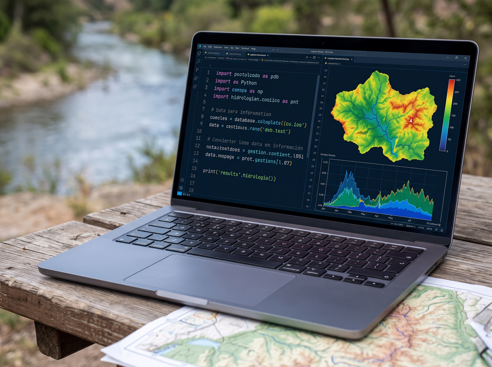
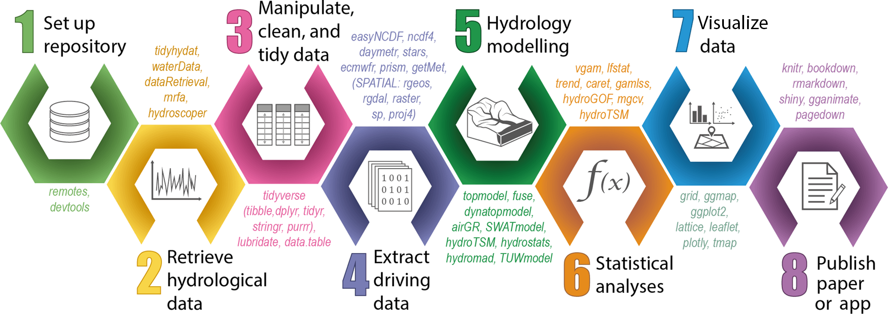
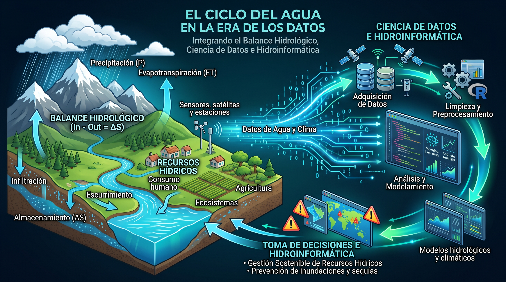
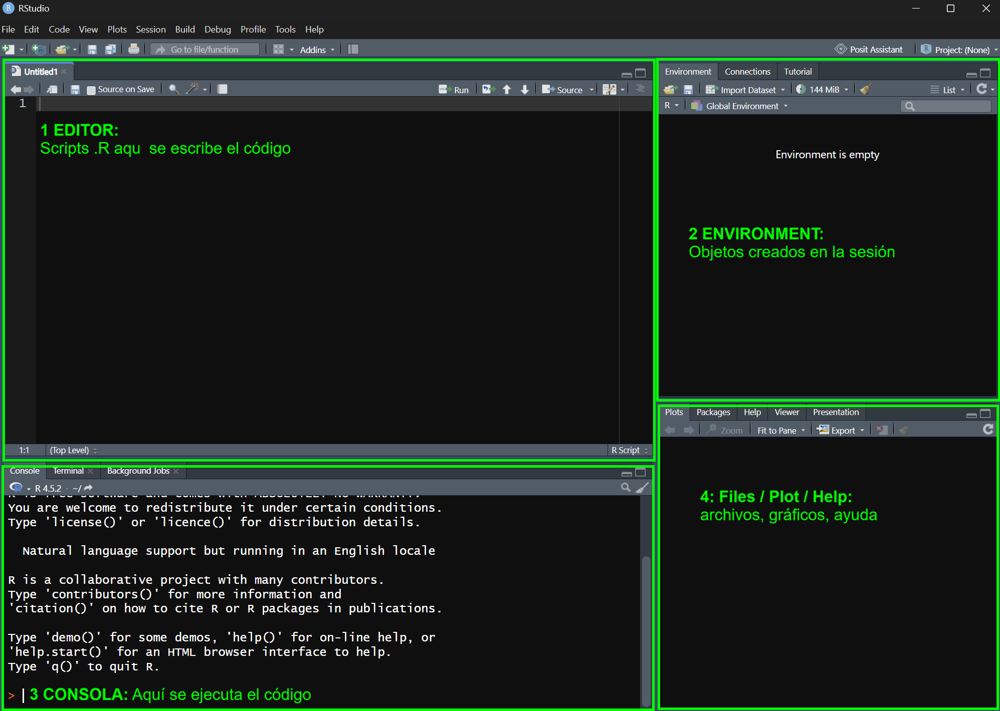

Curso Taller Día 1
Universidad Nacional del Altiplano - Facultad de Ingeniería del Agua y Gestión de Recursos Hídricos
01
R en Ciencias del Agua y Cambio Climático, Proyectos y Estructuras de Carpetas

Fuente: Abbott, M. B. (1991). Hydroinformatics: Information technology and the aquatic environment. Avebury Technical.

Fuente: Slater et al. (2019). Using R in hydrology: a review of recent developments and future directions. HESS, 23, 2939–2963. https://doi.org/10.5194/hess-23-2939-2019

Hoja de cálculo
Script en R
R permite procesar grandes volúmenes de datos de forma eficiente, y la presentación interactiva de resultados facilita su comprensión.
En los análisis de grandes cuencas y para los enfoques de cambio climático esto es clave: el mismo análisis se repite para varios modelos, escenarios y periodos.
Libre y gratuito
No requiere licencia; funciona en Windows, macOS y Linux.
Construido para analizar datos
Estadística y gráficos de calidad desde su origen.
Reproducible
El script documenta cada paso del análisis.
Paquetes hidrológicos
airGR, hydroGOF, trend, qmap, terra, etc.
CRAN reúne más de 20 000 paquetes y mantiene una guía temática de hidrología (CRAN Task View: Hydrology).

| Atajo | Acción |
|---|---|
Ctrl + Enter |
Ejecutar la línea o la selección |
Ctrl + Shift + N |
Nuevo script |
Ctrl + S |
Guardar |
.RprojEn el Curso-Taller: doble clic en el archivo .Rproj de la carpeta descargada.
Enlace: https://github.com/arnoldtraverso/Curso-Taller-R-Hidrologia
Curso-Taller-R-Hidrologia/ ├── Curso-Taller-R-Hidrologia.Rproj ← abrir siempre desde aquí ├── data/ │ ├── raw/ datos originales (no se tocan) │ └── processed/ datos procesados ├── ejercicios/ scripts del curso ├── outputs/ │ ├── figuras/ gráficos generados │ └── tablas/ tablas generadas └── slides/ diapositivas
Los datos de data/raw/ no se modifican: Los resultados se irán generando conforme se avance con los scripts del Curso-Taller.
02
Objetos, vectores, data frame, listas, fechas con lubridate, paquetes y tidyverse
03
Importación (readr, readxl), dplyr/tidyr, NAs y control de calidad, agregación diaria → mensual → anual, ggplot2
04
if/else (años secos/húmedos), for sobre múltiples estaciones, funciones propias (ETP Hargreaves), iteración con purrr::map como alternativa
05
Paquete terra: lectura de NetCDF, recorte de cuenca, extracción de series, precipitación areal, climatología y mapas
Programación en R Aplicada a la Hidrología y Cambio Climático